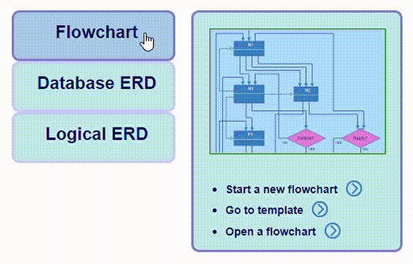
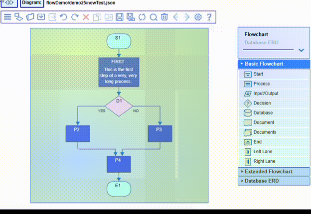
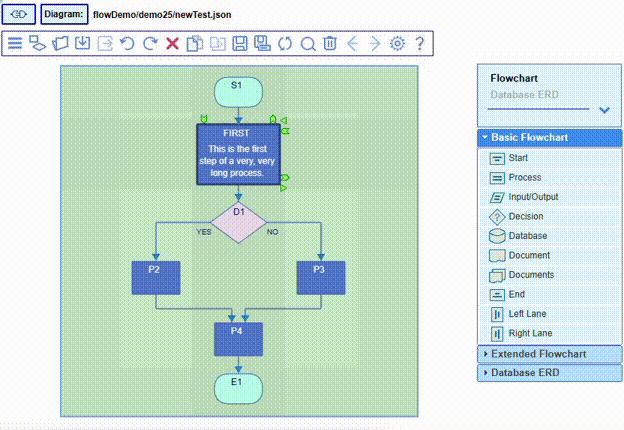
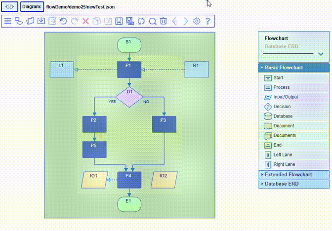
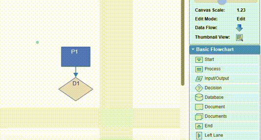
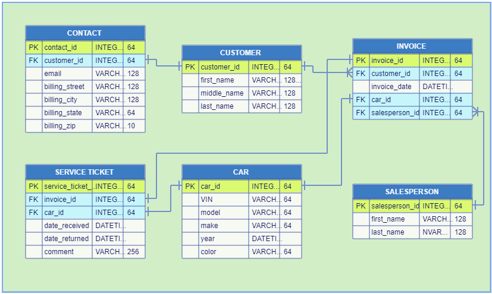
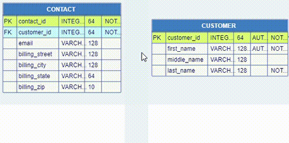
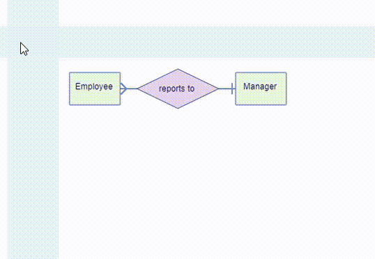
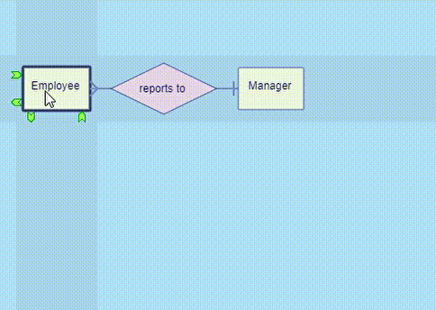

JDElite Flowchart Builder offers design and modeling solutions for a wide variety of use cases. The sections in this guide demonstrate the features of JDElite Flowchart Builder with the help of screenshots and short video clips. The free demo version has all of the built-in features. The only difference from the full version is that there is no access to the proprietary file browser and respectively to the file system. You can create your diagrams but in order to save/reopen them you'll need the additional server module. There are built-in sample templates for each diagram type. In the free demo they can be edited but not saved. In the full version they can be replicated as diagram files, edited and saved.
The start page shows the paths to the three supported diagram types. You can switch to one of these types any time by clicking at the Start Here button on the top toolbar. Most of the time it is pointed by a bubble. In the free demo version the buttons Open... are redirected to open corresponding templates rather than to the proprietary file browser in the full version.

This section covers most of the features common for all the three types of diagrams. Here most of the short video clips use flowcharts, but the features displayed in them apply equally to the remaining diagram types. One exception is the horizontal flow direction that is relevant only to flowcharts. The diagram type specific features are explained further down in the corresponding sections.

Following is a list of actions, accessible from the top toolbar buttons, as well as from context menus or by mouse/keyboard shortcuts. Most of these actions can also be invoked from the hamburger main drop-down menu in the upper left corner:

The following actions are initiated as follows:
- Main drop-down menu
- Start Here: it brings the start page allowing you to switch to a different diagram type
 - Open the file system browser (see
the File System Browser entry below)
- Open the file system browser (see
the File System Browser entry below)
- Open a template for the selected diagram type
 - Undo the latest action (Ctrl+Z)
- Undo the latest action (Ctrl+Z)
 - Redo the latest action that has
been undone (Ctrl+Shift+Z)
- Redo the latest action that has
been undone (Ctrl+Shift+Z)
- Delete the selected individual element, or a selected group
 - Copy the selected element or the group
(Ctrl+-C)
- Copy the selected element or the group
(Ctrl+-C)
 - Paste the selected element or group
to a location pointed by the mouse (Ctrl+V)
- Paste the selected element or group
to a location pointed by the mouse (Ctrl+V)
 - Save the diagram - enabled if there are any
changes from the last save action (Ctrl+S)
- Save the diagram - enabled if there are any
changes from the last save action (Ctrl+S)
 - Save the diagram as a new copy
- always enabled (Ctrl+Shift+S)
- Save the diagram as a new copy
- always enabled (Ctrl+Shift+S)
 - Refresh the diagram and reset the scaling,
if any
- Refresh the diagram and reset the scaling,
if any
 - Open the Search dialog (Ctrl_Shift+F)
- Open the Search dialog (Ctrl_Shift+F)
- Clear the canvas without saving current changes, if any
 - Navigate to the previous diagram,
if such is available, and ask to save current changes
- Navigate to the previous diagram,
if such is available, and ask to save current changes
- Navigate to the next diagram, if such is available, and ask to save current changes
 - Open the Settings dialog
- Open the Settings dialog
 - Open the drop down help menu
- Open the drop down help menu
The editor actions are undoable through an unlimited number of Undo/Redo steps. The undo buffer is cleared by a save action.
The Settings dialog applies to all supported diagram types. It can be invoked at any time
from the Settings icon on the toolbar:

The General tab of Settings dialog offers several different selection options. The Horizontal direction apply to flowcharts only. Some of the selections can be changed at any time during the diagram design without affecting the previous work:

The Colors tab of Settings dialog allows to select the background and/or foreground colors, as well as borders, of all particular node types, as well as other common graphical elements. The selections usually affect the current diagram and are saved in its output JSON file, from where the values are read the next time the file is open. In addition any current set of color selections can be saved as a named color scheme from the next Schemes tab.

The Node Icons tab of Settings dialog allows to choose from a selection of images to be displayed as nodes icons by nodes categories. The image selections will be provided from icons configuration file(s):

The Schemes tab of Settings dialog allows to save named color selections in local configuration files for further reuse. There are 3 built-in color schemes: default, blueSplash and greenSplash. The selected scheme in the top left drop-down is used by all new diagrams. The particular color selections from Colors tab may overwrite the scheme colors for the current diagram.
The editor has a proprietary file system browser that is accessible when a server connection is available. It has full access to the file system for easy navigation to open, save and delete files, and to display, create and delete folders. The created diagrams, in JSON format, can be saved in existing folders or in newly created ones. Currently it is implemented for Windows. The server connection uses node.js.
Below is the browser when it is invoked to open a diagram:

The actions of the buttons on the top of the file browser are:
- Move one level up
 - Move one level down
- Move one level down
- Create new folder at the current location
- Delete the selected file of folder
Below is the brouser when it is invoked to save a diagram:
The Nodes Palette is fixed on the right, leaving the central part of the screen for the
diagram canvas. As it is demonstrated later, the nodes icons are dragged with the mouse over the canvas.
Only icons from the corresponding diagram types are accepted. The Flowchart diagrams
have the largest number of associated icons/nodes, contained in
Basic Flowchart and Additional Symbols tabs.

The layout structure of the canvas is the same for the three supported diagram types.
The nodes are positioned on a rectangular dynamic grid that consists of
layers across the flow direction and
lanes along the flow direction. They are allocated in the cells at the
intersections. The connection links are traced along the pipes between the
layers and between the lanes. All these areas are highlighted when the mouse is moved over.
The layers and the lanes take up considerably larger space than the tiny space taken from the pipes.
When a node icon is dragged from the palette to the canvas, or when a node is dragged to a different
position, only the cells accepting the particular node are highlighted:
Nodes are assigned names at node creation time. Names have to be unique across the diagram. Node names are automatically generated. They can be changed inline any time later. Duplicate names are rejected. Nodes are created either by dragging a node icon from the palette, or by selecting a node item from the right mouse context menu on the canvas when it is invoked on an empty cell. The available selection options are context sensitive:
Layers and/or lanes can be added from the canvas context menu when the mouse is positioned on a pipe. Empty layers and/or lanes can be removed when the mouse is positioned on them:
Single mouse click on a node or on a link marks it as selected. You can make multiple selections in two ways:
The copy categories are grouping nodes that can be copied together.
For Flowcharts there are five categories:
For Logical ERD all nodes are in the same group.
Copying between different diagrams is not accepted.
You can delete all of the selected graph elements using any combination of:
When a diagram is larger than the browser viewable area, the Thumbnail View dialog, invokable from the top right of the screen, helps to navigate the whole design:

To search for a particular node in large diagrams, there is a Search dialog invoked from the
top toolbar:

It allows finding a single node or multiple nodes by
full/partial name, or by matching text/pattern in the node content text.
Flowcharts represent the steps of algorithms, processes or workflows, vizualising the
structure of the problems or tasks.
The template shown below represents the steps of
a bank transaction.
You build a diagram by simply drag-and-drop nodes from the palette
and by dragging links between the nodes, connecting the popup handles with the mouse.
Please note that when you select(click) a popup handle, the handles that potentially allow
a connection on all the nodes will show up lightly highlighted. The connection is accepted
when the connection line dragged by the mouse reached one of them and the highlight color
changes to darker blue.
When moving the mouse over the node, two editable areas are visualized under the cursor: the node name
and the node text content. Double-clicking at any of them, the corresponding text field is open,
accepting the keyboard input.
The name field has some restrictions displayed under the field when
the rules are violated. The content area does not have any restrictions. The changes are accepted
when the Enter key is pressed. When the content size is very large, from the right-click
context menu on the node you can toggle to compress the text showing only two lines or expand it
back in full:
The editing of these fields can be done also from the Properties dialog that is invoked from the context menu by right clicking on the node. Additional text can be attached to the node above and/or below:

From the Properties dialog you can also edit the node colors, add/remove an icon, and hide/unhide the node name:

Resizing the nodes horizontally and vertically is easy by mouse dragging one of the sides or one of the corners. You can reset the extra sizes either individually by node's context menu or globally by the canvas context menu:
The data flow direction for flowcharts can be either top to bottom or left to right, and can be changed or switched back and forth at any time by double clicking at the flipping arrow button in the block on the right of the screen above the palette. The flow direction can be changed from the Settings dialog as well.
 - Vertical
- Vertical

 - Horizontal
- Horizontal
The flowchart is rotated and flipped. This does not otherwise affect its content. The flipping preserves the correlation between the flowchart internal directions and the canvas coordinate system:
A new node is created either by dragging an item from the palette on the right of the screen to an accepting cell on the canvas, or by positioning the mouse on an empty cell and selecting a node type from the context menu. The menu shows only nodes that are accepted at this location:

The start and end layers, as well as the left and right swim lanes, are optional. They all accept their specific node types from the palette or from the mouse context menus.
The flowchart frame size can be modified from the context menus at any time by inserting new layers or lanes, and/or removing the unused ones:
In the Settings dialog you can select whether to use the start & end lanes or not.
You can also select whether to use the side swim lanes or not.
For a vertical flow direction, the former appear at the top and at the bottom, and the latter
on the left and on the right. For a horizontal flow direction, they appear vice versa.There are
specific nodes for start, end, left/top and right/bottom.
You can add or remove central layers and/or lanes
from the right-click context menus on the canvas.

You can attach labels to the links or change their colors from the link Properties dialog that can be invoked from the link right-click context menu or by double clicking on the link.

The nodes can be moved to different grid cells, as well as copied and pasted. The link ports, in order to reassign them, can be moved to different nodes by dragging the mouse between the connection ports. You can choose to enable the association links to show relations between nodes.
The Decision nodes have two outputs: YES and NO and can accepts multiple inputs. The input(s) location is fixed on the top for vertical layout or on the left for horizontal layout. The configuration of the outputs can be chosen by double-clicking on the node. The popup box offers six different options for the YES/NO outputs that are selected by the arrow buttons in clockwise or anti-clockwise direction:

The Database ERDs (entity-relationship diagrams) represent the physical structure of
databases. In essence, an ER diagram contains two object types: entities and relationships.
In physical databases the entities correspond to database tables.
The diagram nodes correspond to the database tables and show the detailed table designs.
The relationships between entities are represented as links between the diagram nodes.
The ERD you created is saved as a file in JSON format.
This file can be exported to a specific database script. Vice versa a database script can be
imported to a JSON file as an internal structure that can be visualized in the editor.
Each database table represents an entity and contains rows and columns.
The rows are called records. Each record is an instance of the entity. All records in a table
have identical structure. For example, the records in the CUSTOMER table in a database are
instances of the customer entity and correspond to different customers.
The database table record is composed of fields (or attributes). The same fields from all records
constitute the table columns. For example, the record fields in the CUSTOMER table are
customer_id, first_name, middle_name and last_name. These are also
the database table column names:
Each field/column has a set of properties, most of them common for different database products. Each diagram node represents in its own table form the structure of an entity record of the database table. The rows in the diagram node table correspond to the database record fields/columns. The rows in the CUSTOMER diagram node below contain these field names in the second column. The other columns show some of the properties values of the particular field/column. In databases these values are stored internally.

The structures of relational databases are determined by the primary and foreign keys.
A primary key is a column or a group of columns (composite primary key) that ensure unique
row identification in a database table.
A foreign key is a column or a group of columns (composite foreign key) that togrther with
a primary key allow to create a reference between two database tables.
The foreign key in one table is a reference to a primary key in another table. There could be multiple
foreign keys from different tables referencing the same primary key.
As it was mentioned before, the rows in the diagram table node correspond to the database table
record fields. The columns in the diagram node show the properties values of each database record field.
The first record field in the CUSTOMER table, named customer_id, is represented
in the first row of the CUSTOMER diagram node. This is the primary key of this database
table. It is tagged with PK in the first column of the node.
The first record field in the CONTACT table, named contact_id, is represented
in the first row of the CONTACT diagram node. This is the primary key of this database
table. It is tagged with PK in the first column of the node.
The second record field in the CONTACT table, named customer_id, is represented
in the second row of the CONTACT diagram node. This is a foreign key of this database
table. It is tagged with FK in the first column of the node.
The popup handles on a PK row of one node and a FK row on another node offer the
choice to create a link between the two database tables diagram nodes. This link is an essential
feature in relational databases. It establishes and ensures the referential integrity between the
referencing columns and the referenced columns.
The primary keys and the foreign keys have different background color.
The small vertical bars at the both ends of the link below show the cardinality.
It defines the possible number of occurrences of the primary entity customer that are associated
with the possible number of occurrences of the foreign entity contact. In the example below
each customer can have only one contact associated with him and each contact corresponds to only
one specific customer. This is called one-to-one relationship. Other types of cardinalities are illustrated later.

A new DB table node is created either by dragging an item from the palette on the right to an accepting cell on the canvas, or by selecting an item from the canvas context menu on an empty cell. In both cases there are three choices. This is more for convenience, because no matter which one is selected, the number of node columns can be chosen in the table node editor later. The minimal number of columns is two and is fixed.
The node name can be edited by double-clicking at the name field.
The DB table node editor is invoked by double-clicking at either the table title bar or at
any table row. You can add, edit or remove a row, as well as rearrange the rows orders. These actions
are position sensitive. The editor actions are demonstrated below.
The node columns Key and Field Name are preselected for the minimal size of the table
node and cannot be unselected. The remaining columns can be selected to be displayed or not. These selections
do not affect the actual content of the node table row. The six designated node columns are common for the most
existing databases. As it was mentioned before, they correspond to the fields properties of a database
record (the database table columns). Currently they are as follows:
Key - designates the field as either primary or foreign key, or none.
Field Name - the database record field name.
Data Type - data type of the record field content.
Length - the length of the data in the record field.
Auto Increment - allows a unique number to be generated automatically when a new record is inserted into the database table.
Not Null - ensures that the given column of the database table is never assigned the null value.
The buttons on the toolbar of the DB table editor are as follow:
- Add a new empty row.
- Add an additional row for primary key (for a composite primary key).
- Add an additional row for foreign key (for a composite foreign key).
- Delete the row if there is no reference to it.
- Move the row one step up if there are no restrictions for it.
- Move the row one step down if there are no restrictions for it.
Within database modelling, cardinality is the numerical relationship between rows of one database table and rows in another. It defines the number of occurrences of a primary entity that are associated with the number of occurrences of a foreign entity. The cardinality is represented graphically as the so called crow's foot symbols at the ends of the connection. There are six commonly accepted relationships symbols:
In general, there are three types of cardinality relationships: one-to-one, one-to-many (many-to-one) and many-to-many.
One-to-one cardinality
One example was the CUSTOMER to CONTACT relation shown before under Primary and Foreign Keys title. This is the case when one entity is split in two in order to present the information in a more comprehensible way. Another example would be the car to service ticket relation in a car repair shop:
One-to-many cardinality
This is when one instance of the first entity may be related to more than one instance of the other entity. An example would be when we keep an authors catalog and we need to show the relation between an author and its books:
Many-to-many cardinality
In a different scenario, in a library, we need to establish the relations between the plurality of authors and the plurality of books. In this case we should preferably use an additional join table, also known as junction or associative table, with two one-to-many relations as follows:
The AUTHORS_BOOKS table contains two foreign keys pointing respectively to AUTHORS and BOOKS tables. These two foreign keys together act as a primary key for the AUTHORS_BOOKS table.
As we saw in the Reference Cardinality title, some foreign keys may be grouped together and act as a
composite key. Same applies for primary keys too.
To create a composite primary key, you need to open the DB table node editor pointing to an already existing
primary key in order to make the association. Use the button
to create the new row, then add the necessary data in the remaining fields.
Adding rows for primary keys using the button is useful when there are multiple database tables with foreign keys referencing the same primary key. In this case there is no need to fill in the fields in the additional primary key rows.
The following example illustrates the relations between a composite primary key and a composite foreign key. The composite foreign key of the SUB_ACCOUNTS table, ref_id and ref_type, references the composite primary key, accnt_id and accnt_type, in the ACCOUNTS table.
The referential constraint must have a one-to-one relationship between referencing and referenced columns. In other words, if the primary key is a set of columns, then the foreign key also must be a set of columns that correspond to the primary composite key.
Logical ERDs (entity-relationship diagrams) are used to design the conceptual or logical
models of business objects that are parts of systems. Often they are useful as preliminary stages before
the physical design, i.e. of a database. They are a convenient tool for business analysts or business
users. A conceptual or logical model defines the global picture of the
system and identifies the business objects as the building blocks of the system. More specifically, it
defines the entities and their attributes, as well as the relationships between them.
The logical models help to understand better the business domain, to clarify the terminology and
relate the business concepts to database structures. At these stages it
is important to determine if there are some inconsistencies or omissions in the overall system design.
These models are intended to capture the overall system concepts, and for this reason they prove to be
useful as basis for the physical design of databases.
The graphical nodes representing the logical symbols, adopted here, consist of three basic types: entity, relationship and attribute. There are some additional derived types as follows:
- Entity (also Strong Entity) - an object of certain kind. It could be considered as a prototype of a database table. It is defined by its attributes.
- Weak Entity - it depends on a strong entity.
- Attribute - defines the property of an entity.
- Derived Attribute - defines an attribute based on another attribute.
- Multivalued Attribute - defines an attribute with multiple values.
- Relationship - defines the type of relation between two entities. Usually it corresponds to a primary-foreign key reference.
- Weak Relationship (also Non-Identifying Relationship - a reference that does not correspond to a primary-foreign key reference.
Similar to the database modelling, the cardinality defines the number of occurrences of one entity that are associated with the number of occurrences of another entity. The cardinality is represented graphically the similar way with crow's foot symbols on the ends of the connections at the entities. Here are the six relationships symbols:
In general, as it was shown above, there are three cardinality relationships: one-to-one, one-to-many and many-to-many.

The Logical ERDs are intended to present logical structures where objects, constituted of
entity-attributes groups, expose certain relations between themselves. The logical graphical nodes,
described above, are much simpler compared to the database ERD symbols or even to the flowchart nodes.
A new logical ERD node is created either by dragging an item from the palette on the right to an accepting cell on the canvas, or by selecting an item from the canvas context menu on an empty cell:
In order to show the relation between two entities, a relation node is placed between them:
The established cardinality relationship between one or more employees and their manager is many-to-one. Similar attribute groups can be copied and pasted.

The Relationship node has two modes - YES/NO decision mode and 1-to-3 ways mode. By double-clicking
on the node, the popup box allows to choose which mode is more appropriate for the particular use.
The YES/NO decision mode is similar to the decision nodes in Flowcharts.
The 1-to-3 ways mode has one input that can be positioned at any of the four directions, and 3 outputs
positioned on the remaining 3 corners:
It is convenient to change the positions of the ends of the Relationship node when you want to modify the layout of the diagram:
